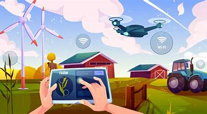
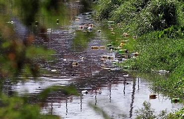
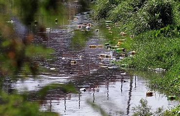

História da Migração Rural para Urbana:
A migração do campo para a cidade reflete profundas transformações econômicas e sociais iniciadas com a Revolução Industrial, quando as cidades passaram a oferecer mais oportunidades de trabalho, melhores serviços de saúde e educação, e uma infraestrutura mais desenvolvida. Apesar dos atrativos urbanos, a transição pode apresentar desafios, como adaptação cultural, altos custos de habitação e desigualdades. Exemplos históricos como a Grande Migração nos EUA e a urbanização acelerada no Brasil mostram como esses movimentos moldam tanto as áreas urbanas quanto rurais. Atualmente, há uma tendência crescente de valorização das áreas rurais, com iniciativas que buscam equilibrar o desenvolvimento entre o campo e a cidade.

Benefícios da Vida Urbana:
- Oportunidades de Emprego
- Educação e Capacitação
- Serviços de Saúde
- Infraestrutura e Comodidades
- Rede Social e Cultural
- Segurança e Estabilidade
- Acesso a Inovações e Tecnologia
O Papel da Tecnologia na Integração Rural-urbana
A tecnologia desempenha um papel crucial na integração rural-urbana ao facilitar a comunicação, otimizar a gestão de recursos e promover o acesso a serviços urbanos para áreas rurais. Ferramentas digitais ajudam a conectar comunidades rurais com oportunidades urbanas, melhoram a eficiência agrícola e oferecem soluções inovadoras para desafios de desenvolvimento regional.
Impacto Ambiental da Urbanização
A urbanização, ou crescimento das áreas urbanas, tem efeitos profundos sobre o meio ambiente. À medida que as cidades se expandem, diversos aspectos do ambiente natural são impactados. A seguir, destacam-se alguns dos principais efeitos da urbanização:
- Desmatamento e Perda de Habitat.
- Poluição do Ar.
- Poluição da Água.
- Efeito de Ilha de Calor.
- Gestão de Resíduos.
- Mudanças nos Ciclos Hidrológicos.
- Impacto na Biodiversidade.
 
